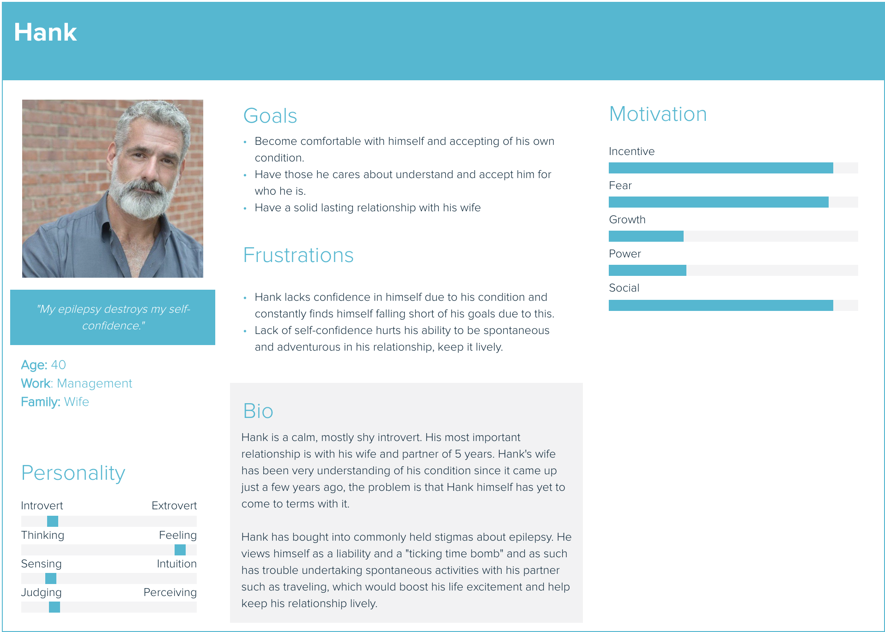
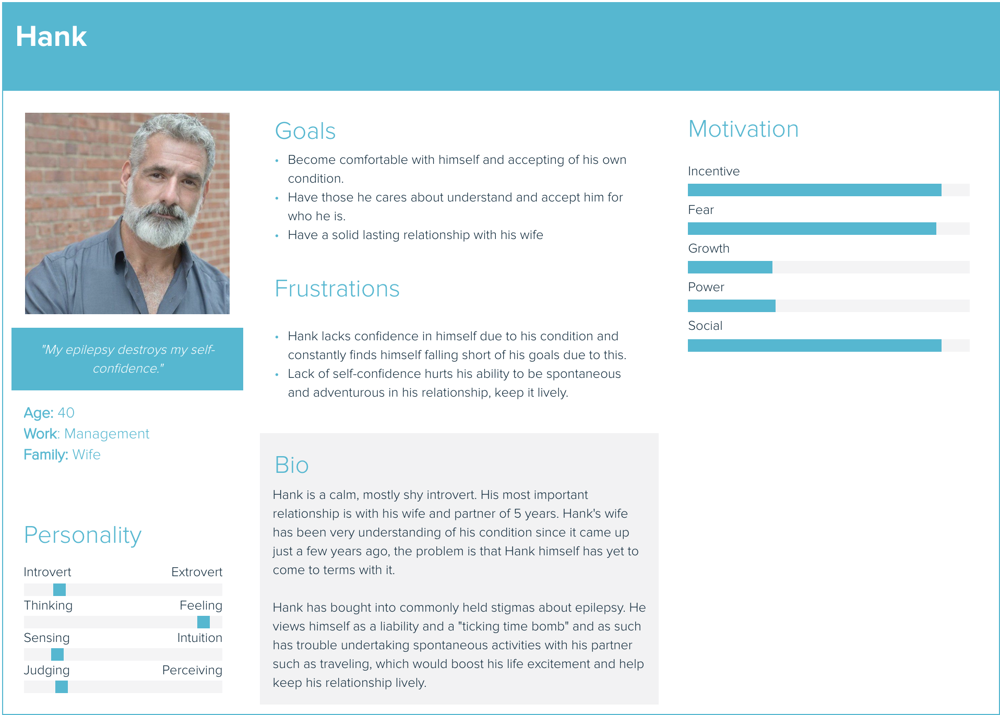

Epilepsy Patient (Target User) Motifs
- Social isolation due to stigma from their disease
- Trouble finding employment -- also due to stigmatization
- Intensely anxiety-inducing side-effects such as sudden unexpected death in 1% of patients
- Harsh treatments for stubborn cases
Personas

 

Scenarios
Karen's Social Life
Problem: Karen(20) is an extroverted young adult who enjoys people's company, but is faced with anxiety/fear and stigmatization due to her epilepsy. Despite her having epilepsy, she still makes a strong effort to engage with her friends and not let her epilepsy hold her back. Her worst fears are realized one night at a party when a seizure takes hold of her. While her body uncontrollably feels the seizure, people gawk and laugh at her. Many bystanders do not understand her condition, and those who do insensitively react to her seizure. After this poor experience, Karen has trouble coping, and moving on from the event, or engaging in future social interactions due to embarrassment/fear. Karen starts searching out online resources to help with her emotional problems from epilepsy and finds our application. The applicatioin determines that Karen would benefit most from the 'take another look' module. After completing the 'take another look' module, Karen realizes that her problem will not disappear, but she figures out that she can find a way to shed a positive light upon it. Karen searches for a positive way to frame the problem and realizes she is hanging out with the wrong people, and should reconvene with her less popular friends that accept and support Karen for who she is.
Dan's Work
Dan, a 30 year old male, battles with his anxiety daily, struggling to get out of bed and go to work with a looming fear over his head. Will my employer find out about my epilepsy? Will they fire me because they think I am a risk? Despite his constant stress, Dan has managed to float by so far but has not established a stable life for himself yet. After being let go at his last job, it was not easy to just find a job but also to build up self confidence to start searching for one in the first place. Though he lives in an urban area and job opportunities are seemingly endless, he is unable to bring himself to try. It is people like Dan who lack direction and guidance to overcome the daily challenges epilepsy poses, in regards not to just social life but also work life. Dan finds our application through a online community of people living with epilepsy. It designed to educate people with epilepsy to give them the tools to take control of their life. Dan began to use the program and after an initial set of questions was recommended a starting point to begin his support. He completes many of the stress control exercises like breathing techniques allowing him to curb anxiety attacks before they are able to take hold. He was able to watch helpful techniques in properly explaining his epileptic condition when necessary, and encountered abundant positive reinforcement encouraging him to recognize his condition but not let it hold him back from living how he truly wanted. Within a few weeks of his support through our application, he manages to set up a job interview with a local company and feels confident he can land the job.
Hank's Relationship
Hank (43) is a middle aged male with epilepsy who is having trouble maintaining a relationship with his wife Mary(41). Hank is a passionate person and in an ideal world would take his partner on many adventurous trips to explore nature together. He dreams of going on hikes, paddling a canoe and of taking Mary on exotic vacations where they could walk beaches together away from the hustle and bustle of their city life in Boston. Unfortunately Hank feels true fear when he opens his laptop to look into planning a trip, it seems at every step of the process his mind runs with countless fears that result in him being unable to end up booking anything at all. Mary and him have enjoyed the last two years married together but Hank worries that Mary will only entertain the same “dinner at home” date night for so long before she grows tired of the same thing over and over again. He has made up his mind that unless he is able to show off his spontaneous and fun side, his time with his wife will be far shorter than he wishes. He feels that epilepsy only allows him to be half the man he is in his mind. By chance while searching for epilepsy friendly vacations, he finds our application built for people like him. He realizes after completing training modules that his epilepsy does not need to hold him back from exploring the world with the woman he loves. He engages with many exercises designed to break the mental stigma people suffering with epilepsy have about themselves. By breaking the stigma in Hank’s mind, he is able to build up the confidence and trust in himself to take Mary on a trip she will never forget.
Use Cases
Karen's Use Case
Normal course [under normal circumstances what will the user do?]- Karen arrives on the product's landing page.
- Karen creates an account, as it's her first time on the page.
- The product asks Karen to rank herself on four categories of emotional problems that commonly pose a problem to epilepsy patients: problem solving, taking a second look, recognizing stigma, and stress management (how do you feel about _____?) in order to uncover what pains them about their epilepsy.
- Karen introspects and answers those questions.
- The product determines that Karen suffers most from lack of being able to find the positives in epilepsy-related situations.
- The product presents Karen a series of video content (a "course") titled "taking another look" created in collaboration with professional epilepsy physicians which is focused on taking a positive outlook on disturbing situations.
- Karen watches the course video content for the "taking another look" module.
- Karen makes another rating of her feelings after completing the "taking another look" module.
- Karen makes significant emotional progress (her ending emotional valence is more positive than it was at the outset, determined based on her ratings).
- Karen takes the skill of engineering a positive outlook into her daily life, where she takes the party situation and turns it positive by realizing she is hanging out with the wrong group of friends, and she re-establishes connections with her less popular friends that.
- Karen's quality of life improves.
- If Karen has not made significant emotional progress, and she desires to grow further in other areas:
- The product recommends the next most relevant course based on Karen's new ratings, or he can choose to go through the same course over again.
- Karen starts again from step #5.
Dan's Use Case
Normal course [under normal circumstances what will the user do?]- Dan arrives on the product's landing page.
- Dan creates an account, as it's his first time on the page.
- The product asks Dan to rank himself on four categories of emotional problems that commonly pose a problem to epilepsy patients: problem solving, taking a second look, recognizing stigma, and stress management (how do you feel about _____?) in order to uncover what pains him about his epilepsy.
- Dan introspects and answers those questions.
- The product determines that Dan suffers most from social stigmas tied to his condition.
- The product presents Dan with a series of video content (a "course") titled "recognizing stigma" created in collaboration with professional epilepsy physicians which is focused on recognizing and not succumbing to social stigma related to epilepsy.
- Dan watches the course video content for the "recognizing stigma" module.
- Dan makes another rating of his feelings after completing the "recognizing stigma" module.
- Dan makes significant emotional progress (his ending emotional valence is more positive than it was at the outset, determined based on his ratings).
- Dan takes the skill of recognizing and managing social stigmas of epilepsy back into his daily life, where he is able to inform his wife that he is more capable of being spontaneous than she thinks, and they start a new streak of fun date nights.
- Dan's relationship with his wife, and his quality of life, both improve.
- If Dan has not made significant emotional progress, and he desires to grow further in other areas:
- The product recommends the next most relevant course based on Dan's new ratings, or he can choose to go through the same course over again.
- Dan starts again from step #5.
Hank's use case
Normal course [under normal circumstances what will the user do?]- Hank arrives on the product's landing page.
- Hank creates an account, as it's his first time on the page.
- The product asks Hank to rank himself on four categories of emotional problems that commonly pose a problem to epilepsy patients: problem solving, taking a second look, recognizing stigma, and stress management (how do you feel about _____?) in order to uncover what pains him about his epilepsy.
- Hank introspects and answers those questions.
- The product determines that Hank suffers most from social stigmas tied to his condition.
- The product presents Hank with a series of video content (a "course") titled "recognizing stigma" created in collaboration with professional epilepsy physicians which is focused on recognizing and not succumbing to social stigma related to epilepsy.
- Hank watches the course video content for the "recognizing stigma" module.
- Hank makes another rating of his feelings after completing the "recognizing stigma" module.
- Hank makes significant emotional progress (his ending emotional valence is more positive than it was at the outset, determined based on his ratings).
- Hank takes the skill of recognizing and managing social stigmas of epilepsy back into his daily life, where he is able to inform his wife that he is more capable of being spontaneous than she thinks, and they start a new streak of fun date nights.
- Hank's relationship with his wife, and his quality of life, both improve.
- If Hank has not made significant emotional progress, and he desires to grow further in other areas:
- The product recommends the next most relevant course based on Dan's new ratings, or he can choose to go through the same course over again.
- Hank starts again from step #5.
Requirements
- (Data) Patients' information should be kept securely due to the sensitive nature.
- (Data) The patient must enter their rating of their feelings on a scale of negative to positive valence in regards to the topic of each module at the outset and end of that module.
- (Technical) The technology must be able to run in a web browser environment on mobile or desktop.
- (Functional) The website can track a patient's emotional progress as they accomplish subsequent sections of the web application.
- (Environment) The web application must be of soothing color, not too flashy or animated in order to avoid triggering seizures.